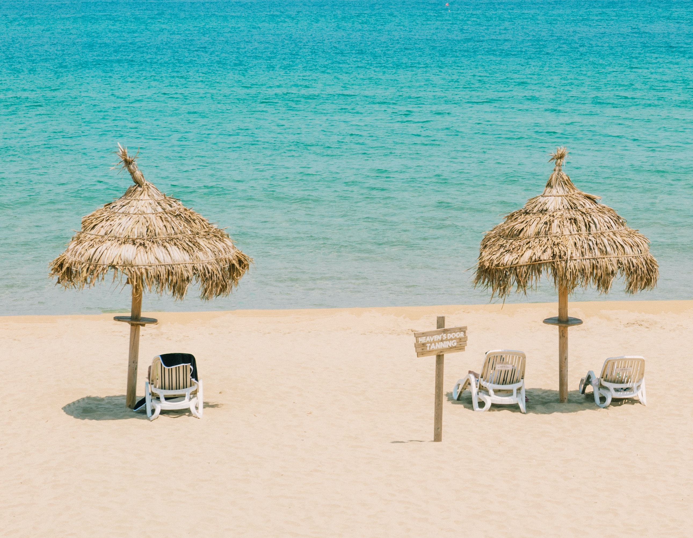
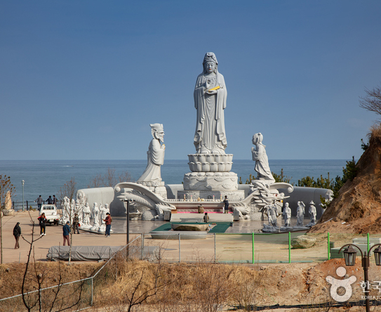
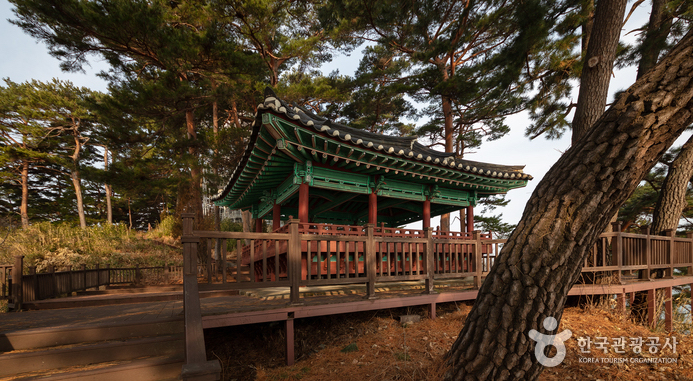
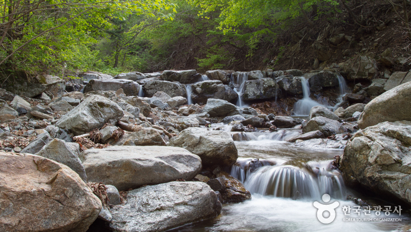

주요 관광지
-

서퍼비치
안전하게 해수욕을 즐길 수 있어 여름에 인기 있는 해변으로 스킨스쿠버 장소로도 사랑받고 있다. 수심이 얕아 초보 서퍼들이 많이 찾고 있으며, 백사장 인근에서 야영도 가능하다. 서핑에 도전하고 싶은 경우 근처 서핑스쿨로 방문하면 된다.
-

휴휴암
1995년 흥법스님이 창건한 휴휴암은 바닷가에 누운 부처님 형상의 바위가 발견되며 기도처로 유명해진 곳이다. 야외에 서 있는 관세음보살상 뒤로 푸른 동해바다를 조망할 수 있으며 찾아오는 관광객들을 위해 경내에서 카페를 운영하고 있다.
-

죽도정
강원도 양양군 현남면에 위치한 둘레 1km, 높이 53m의 작은 섬, 죽도의 정상에 있는 정자다. 정자에서 바라보는 풍광이 아름다워 양양8경에 이름을 올렸다. 일출 명소로도 유명하다. 죽도정 근처에 위치한 죽도 전망대는 섬 풍광을 한눈에 둘러볼 수 있는 죽도의 또 다른 명소다.
-

국립 미천골자연휴양림
약 7km에 달하는 미천골계곡은 곳곳에, 크고 작은 폭포를 만들며 굽이처 흐른다. 휴양림 내에는 산림문화휴양관등 숙박시설, 편의시설이외에도 신라시대 고적인 선림원지와, 불바라기약수터, 재래봉(토종꿀) 보호구역으로 지정된 곳 등이 있어 볼거리가 많다. 특히 구룡령정상에서 휴양림방면으로 이어지는 56번 국도는 수려한 계곡과 아름다운 풍경으로 드라이브 코스로도 손색이 없다.
입장료 | 어른 1000원 청소년 600원 어린이 300원
맛집 및 카페
-

바다뷰제빵소
카페/베이커리
주소 | 강원 양양군 강현면 동해대로 3296 -

범바우막국수
한식
주소 | 강원 양양군 강현면 동해대로 3277-22 -
감나무식당
한식
주소 | 강원 양양군 양양읍 안산1길 73-6